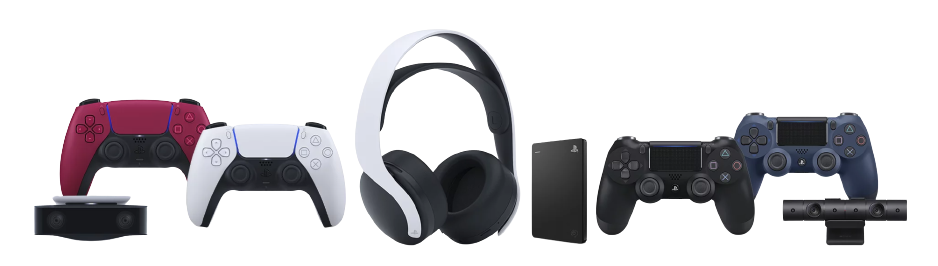
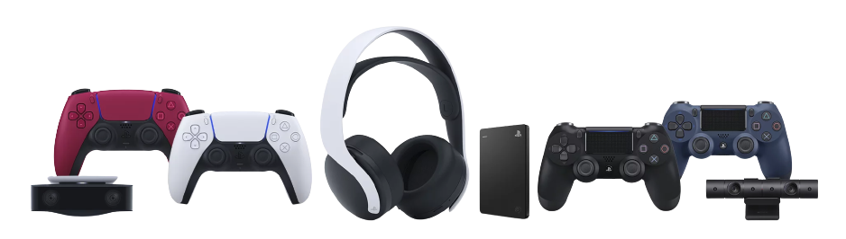
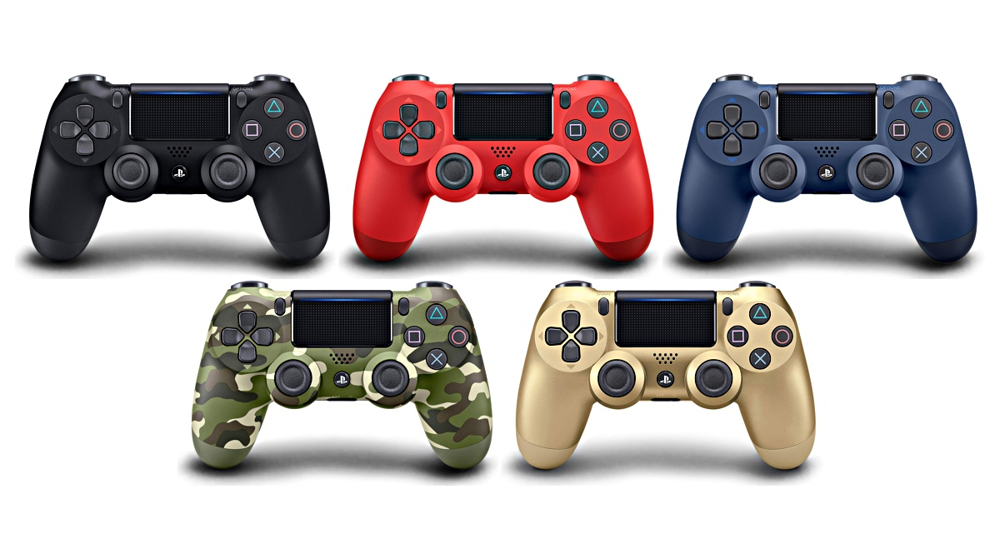
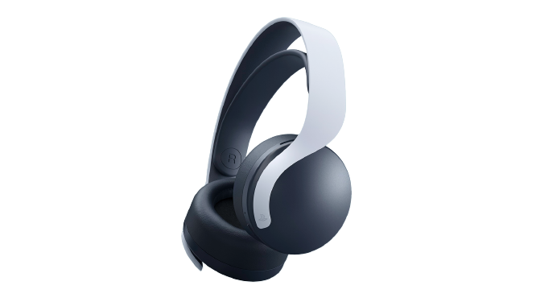
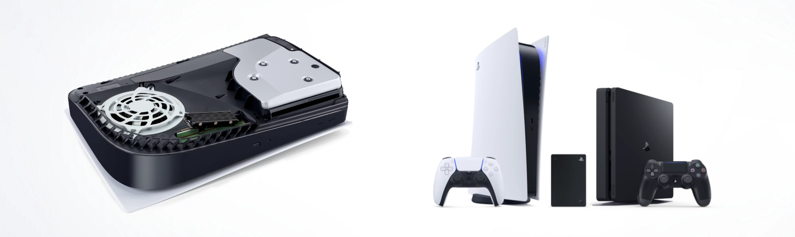

Build your perfect gaming setup with controllers, headsets and other accessories for your PS5™ or PS4™ console.
Add player two, three and four to your local multiplayer games with a vibrant range of PlayStation controllers.
Take controller of your PS4 games with the iconic DUALSHOCK 4 wireless controller, featuring responsive triggers,
textured grips and a host of features to bring you closer to your games.
Elevate your in-game audio experience with a headset built for PS5 and PS4 consoles.
Discover a headset fine-tuned for 3D Audio on PS5 consoles2 and with 7.1 virtual surround sound support on PS4.
Offering up to 12 hours of wireless play and dual noise-cancelling microphones,
you can keep the party chat flowing with crystal-clear voice capture4.
Save even more games, video clips and screenshots with extra internal and external storage.
Upgrade your PS5 console’s storage space up to 4TB and access your games, apps and
media directly from an internal high-speed SSD expansion.
Add an officially licensed Seagate USB 3.0 external hard drive into your setup for up to 8TB
of extra space to store PS5 games, and play PS4 games directly from the HDD.
1 Compared to DUALSHOCK 4 wireless controller
2 Available when feature is supported in game
3 Internet and account for PlayStation™Network required. Streaming services may require paid subscription and are not available in all countries.
4 Internet and account for PlayStation Network required.
5Playing PS VR games on a PS5 console requires a PS VR headset, PlayStation Camera for PS4™ (Model CUH-ZEY1 or CUH-ZEY2) and a PlayStation Camera adaptor
(no purchase required. Visit playstation.com/camera-adaptor for details). For the best PS VR experience on PS5, we recommend using a DUALSHOCK 4 wireless controller.
Selected games may require PlayStation®Move motion controllers or be compatible with the PlayStation®VR aim controller. The new HD camera for PS5 is not compatible with PS VR.
The PS VR headset, PS Camera, DUALSHOCK 4 wireless controller, PS Move controllers and PS VR aim controller are all sold separately.
6 With compatible 4K HDR displays
"PlayStation", "PlayStation Family Mark", "PS4", "PS5", "DualSense" and "DUALSHOCK" are registered trademarks or trademarks of Sony Interactive Entertainment Inc.
"SONY" is a registered trademark of Sony Group Corporation.